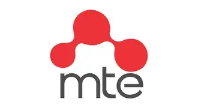

QUEM SOU
01
Minha paixão é resolver problemas, criar interfaces sensacionais e manter sua empresa à frente da concorrência, criando aplicativos, dashboards, websites e experiências únicas. Eterno aprendiz, sou curioso e sou obsessivo por tudo relacionado à inovação e design. Minha maior satisfação é construir algo que dure e funcione bem, além de usar dados para ajudar as pessoas a tomarem melhores decisões. O software então é somente uma ferramenta nesse arsenal multifacetado.
TRABALHO
ALI
Emprego
atual
8+
Anos de
experiência
40+
Projetos
completados
PIANO
Musicista
entusiasta
EXPERTISE
TIMELINE
Conheça minha
Veja também a timeline na versão Super Mario

SEBRAE
AGENTE LOCAL DE INOVAÇÃO

FREELANCE
PROGRAMADOR / CONSULTOR

IBM
CIENTISTA DE DADOS

DAMÁSIO EDUCACIONAL
GESTOR DE CARTEIRAS

COCA-COLA FEMSA
TRAINEE DE PLANEJAMENTO ESTRATÉGICO

KRONES AG
SUMMER INTERN
COCA-COLA FEMSA
ESTAGIÁRIO DE MANUTENÇÃO

MTE
GESTOR DE MARKETING

CNPQ
BOLSISTA DE INICIAÇÃO CIENTÍFICA

UNICAMP
ENGENHARIA MECÂNICA
PORTFOLIO
02
PROJETOS
Alguns dos projetos que não tive que assinar NDA (non-disclosure agreement) estão abaixo. Cada uma das imagens é clicável e abre um PopUp com mais informações.


CONTACT
03
FALECOMIGO! É dificil não falar sobre digital. Mande um e-mail ou clique em um dos links abaixo para conversarmos.